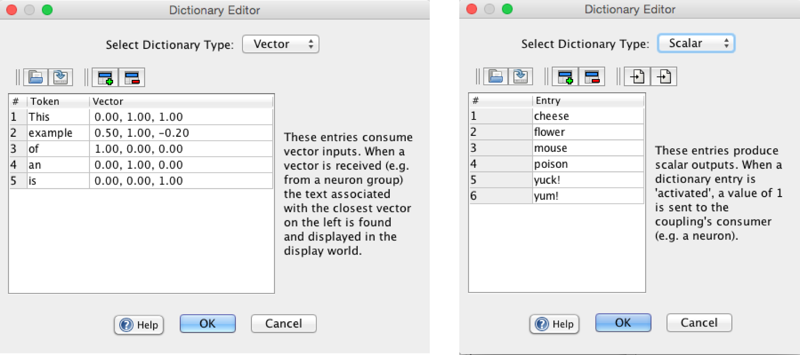

Reader World
Reader world intuitively models "reading" by parsing text in the main window and converting this text to scalars or vectors that are processed by a neural network. Compare reading or hearing, where we see or hear words, and our eyes and ears convert these words in to patterns of activity in the brain (which are patterns of numbers in Simbrain).
The basic way reader worlds work is that you load some text of interest in to the main window (just copy and paste in). Then, at each iteration of the workspace, the current token (either a word or a character; see "parsing" below) is highlighted, and is converted in to single number (scalar) or vector of numbers and sent to another component via couplings. Here is how this works schematically:

Since reader worlds produce numbers or lists of numbers, they are producers in couplings. There are two kinds of reader world producers:
Scalar producer: When a piece of text is parsed, a single number is passed to a scalar consumer (usually a neuron).
Vector producer: When a piece of text is parsed, a vector of numbers is passed to a vector consumer (usually a neuron group).
Scalar and Vector Dictionaries
The associations described above rely on scalar and vector dictionaries (see the screenshot below), accessed via the edit dictionary... menu item and button. A drop down box allows you to select which dictionary to view or edit.
Scalar dictionary: a simple list of tokens that can serve as producers in scalar couplings. When a given word is parsed, if a match is found in the scalar dictionary, a value of 1 is sent to any coupled consumers. Stored in the "token dictionary".
Vector dictionary: a map that associates words with specific vectors. When a given word is parsed, if a match is found in the vector dictionary that vector is sent to any coupled consumers. Stored in the "vector dictionary".

For example in a network you could right click on a node, go to "receive scalar coupling from" and then in the context menu choose "ReaderWorld1" and then "a" to make that neuron respond to the letter a being parsed.
Text can be parsed in several ways. How text is parsed is set using the Word / Character radio button at the bottom of the main window.
Word-based: In this mode, the world advances through the text one word at a time, using a delimiter (defaulting to white space) that is set in the preference dialog. This delimiter is a java regular expression that is passed in to a java pattern object.
Character-based: In this mode the world, advances through the text one character at a time.
Menu
File
Open: Opens a new component.
Save / Save As: Saves the current component.
Load Text: Uploads a text file.
Close: Closes current component.
Edit
Edit Dictionary: See commands.
Preferences: Show preferences dialog.
Parse Style: See parse types.
Regular Expression: This regular expression is used to determine how tokens are delimited when the reader world is in "word" mode. The regular expression is passed to a jave pattern object. By default it is set to use whitespace as a delimiter..
Toolbar

|
Open new component. |

|
Save component. |

|
Edit dictionary. |